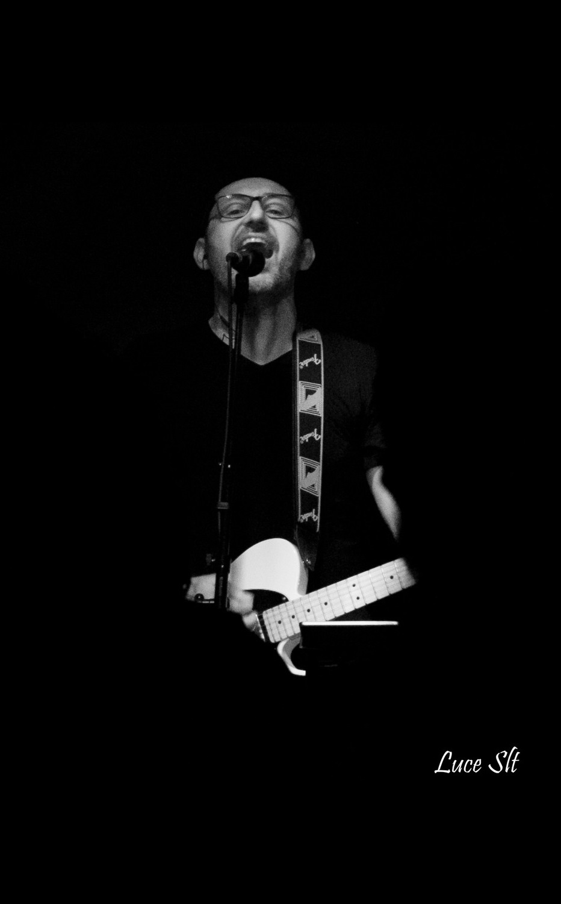
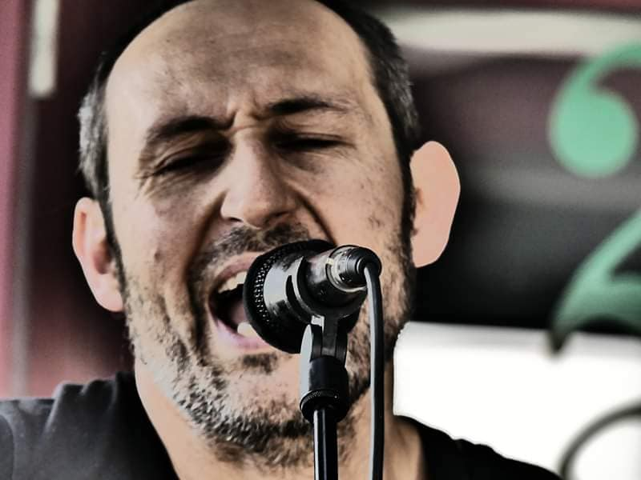
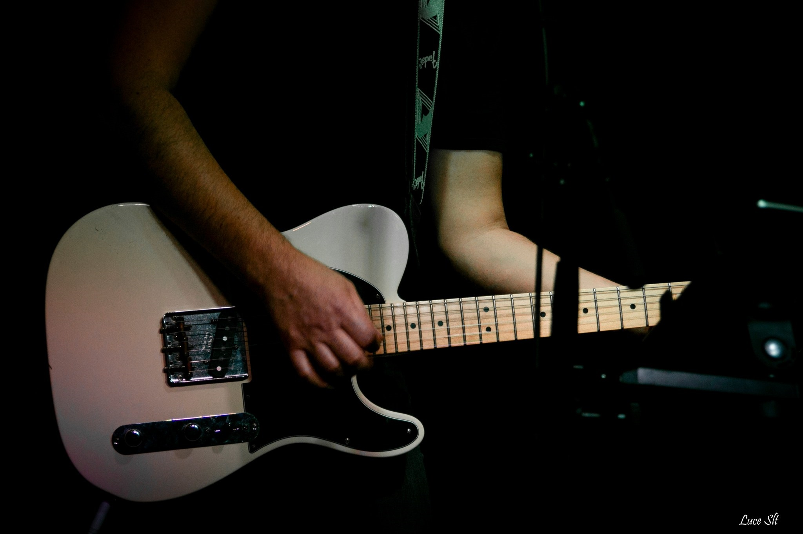
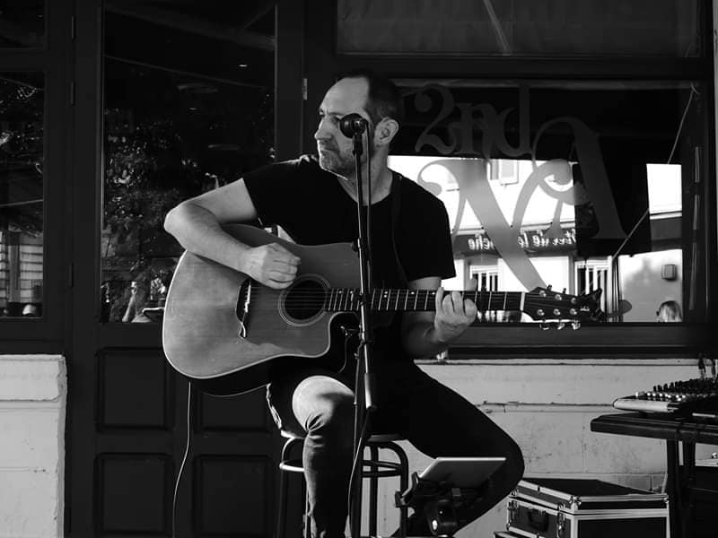
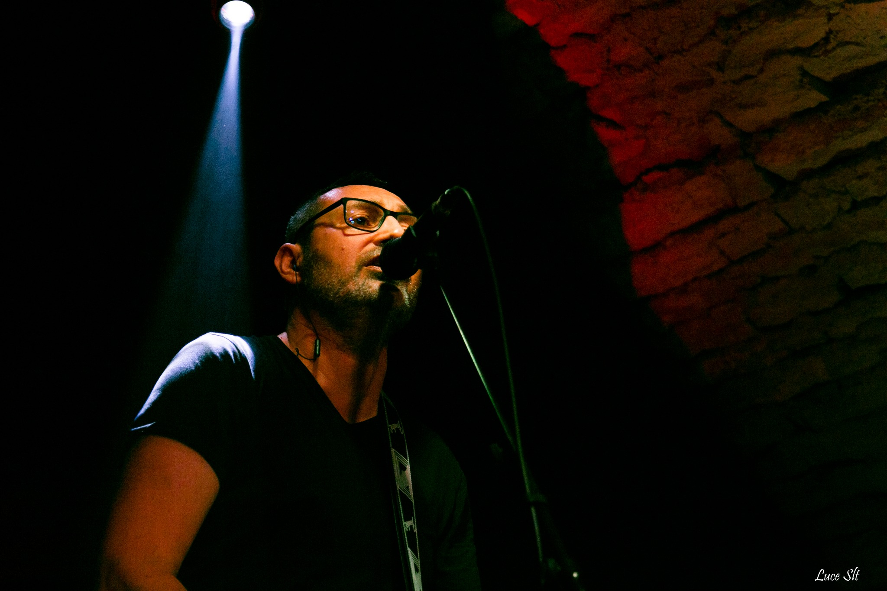
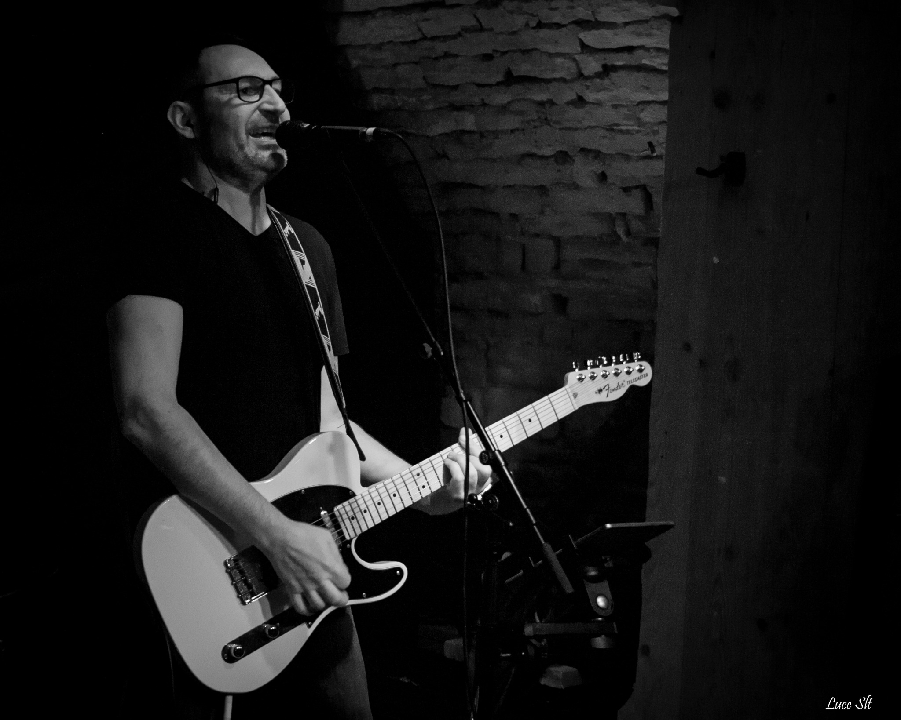

Tom Darbon
Auteur, compositeur, interprète
Chanteur pop/rock français, Tom Darbon mêle l’énergie de la guitare acoustique à la profondeur des textes en français. Son univers navigue entre intensité et douceur et se pare d'arrangements à la frontière du classicisme et de la modernité, nous offrant ainsi des chansons en forme de bijoux pop d'une étonnante intemporalité.






